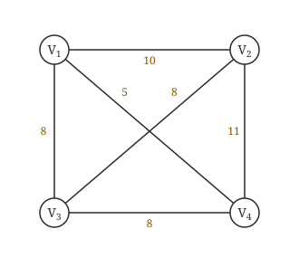
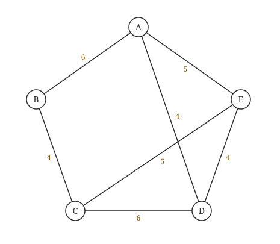
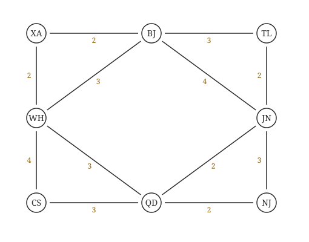
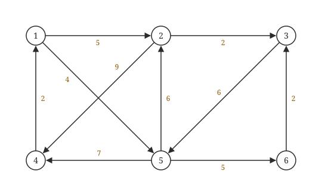
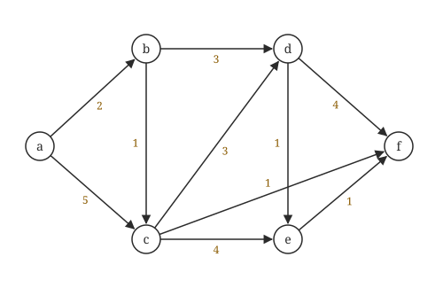

408
408先答旧题
邻接矩阵和邻接表的 BFS 时间复杂度？
保证 n 个顶点的图在任何情况下连通，最少多少边？
BFS 能解决什么最短路径？
建一张通信网要把所有城市连起来，线路总长最短：最小生成树。导航要从一个点到另一个点最近：最短路径。这一话四个算法每一个都不难，关键是能手算出每一步的表。
其之壹最小生成树
连通带权图中，权值和最小的生成树。两个算法都基于同一性质：跨越任意割的最小边，一定在某棵 MST 里。把顶点分成两堆，连接两堆的最便宜那条边一定值得选。
Prim 从一个点长大：已选集合 S，每次选一条连接 S 和外面的最小边，把新顶点纳入。
Kruskal 从边出发：所有边按权排序，从小到大看，两端已经连通就跳过（否则成环），否则选上。判断是否连通用并查集。
两个算法对比
| 算法 | 思路 | 时间 | 适合 |
|---|---|---|---|
| Prim | 从一个点长大，每次选跨越的最小边 | O(n²)（矩阵） | 稠密图 |
| Kruskal | 所有边排序，能选就选，用并查集判环 | O(e log e) | 稀疏图 |
MST 的性质
代价唯一，树可能不唯一。
所有边权不同 ⟹ MST 唯一（反过来不成立）。
Prim 从不同点开始，选边次序不同，但代价相同。
最小的边不一定在所有 MST 中（若有并列最小边且成环）；但严格唯一最小的那条边一定在每棵 MST 中。
其之貳Dijkstra：单源最短路径
烧绳子
从源点点火，火沿着边烧，速度相同。每次最先被烧到的那个顶点，它的最短距离已经确定了，再也不会变短。这要求权值不能为负。
下面这张图是这一节的例子：
| 顶点 | 1 | 2 | 3 | 4 | 5 |
|---|---|---|---|---|---|
| dist | 0 | ∞ | ∞ | ∞ | ∞ |
| path | — | — | — | — | — |
| 已确定 |
| 顶点 | 1 | 2 | 3 | 4 | 5 |
|---|---|---|---|---|---|
| dist | 0 | 10 | ∞ | ∞ | 5 |
| path | — | 1 | — | — | 1 |
| 已确定 | ✓ |
| 顶点 | 1 | 2 | 3 | 4 | 5 |
|---|---|---|---|---|---|
| dist | 0 | 8 | 14 | 7 | 5 |
| path | — | 5 | 5 | 5 | 1 |
| 已确定 | ✓ | ✓ |
| 顶点 | 1 | 2 | 3 | 4 | 5 |
|---|---|---|---|---|---|
| dist | 0 | 8 | 13 | 7 | 5 |
| path | — | 5 | 4 | 5 | 1 |
| 已确定 | ✓ | ✓ | ✓ |
| 顶点 | 1 | 2 | 3 | 4 | 5 |
|---|---|---|---|---|---|
| dist | 0 | 8 | 9 | 7 | 5 |
| path | — | 5 | 2 | 5 | 1 |
| 已确定 | ✓ | ✓ | ✓ | ✓ |
| 顶点 | 1 | 2 | 3 | 4 | 5 |
|---|---|---|---|---|---|
| dist | 0 | 8 | 9 | 7 | 5 |
| path | — | 5 | 2 | 5 | 1 |
| 已确定 | ✓ | ✓ | ✓ | ✓ | ✓ |
| 顶点 | 1 | 2 | 3 | 4 | 5 |
|---|---|---|---|---|---|
| dist | 0 | 8 | 9 | 7 | 5 |
| path | — | 5 | 2 | 5 | 1 |
| 已确定 | ✓ | ✓ | ✓ | ✓ | ✓ |
Dijkstra 手算表头
每一轮写一行：S 集合 | dist[每个顶点] | path[每个顶点]。
- 未确定的顶点中选 dist 最小的 u，放入 S。
- 用 u 更新：若
dist[u]+w(u,v) < dist[v]，更新 dist[v]，path[v]=u。
时间 O(n²)。不能处理负权。
MST 和最短路径树不是一回事
Prim 比的是「边权」，Dijkstra 比的是「到源点的累计距离」。代码几乎相同，只差这一句。两者产出的树在大部分图上都不同（随机图上超过 6 成不同）。
为什么不能有负权：Dijkstra 的前提是确定了的顶点不会再变短。设 a→b 权 2，a→c 权 3，c→b 权 −2。第一轮确定 b=2，可真正最短是 a→c→b = 1。
合上页面说一遍：Dijkstra 的一轮做两件事，是什么？和 Prim 差在哪一句？
选 dist 最小的未确定顶点；用它松弛其他顶点。Prim 比的是到集合的边权，Dijkstra 比的是到源点的累计距离。
其之參Floyd：所有点对
Dijkstra 跑 n 遍可以得到所有点对，Floyd 代码更短。思路：只允许经过前 k 个顶点时的最短路径，逐步放开 k。第 k 轮问：经过 k 中转，会不会比现在短？所以中转点一定要写在最外层。允许有负权边，但不能有负权回路。时间 O(n³)。
for (int k = 0; k < n; k++) // 中转点在最外层 for (int i = 0; i < n; i++) for (int j = 0; j < n; j++) if (A[i][k] + A[k][j] < A[i][j]) { A[i][j] = A[i][k] + A[k][j]; path[i][j] = k; }
| v0 | v1 | v2 | |
|---|---|---|---|
| v0 | 0 | 6 | 13 |
| v1 | 10 | 0 | 4 |
| v2 | 5 | ∞ | 0 |
| v0 | v1 | v2 | |
|---|---|---|---|
| v0 | 0 | 6 | 13 |
| v1 | 10 | 0 | 4 |
| v2 | 5 | 11 | 0 |
| v0 | v1 | v2 | |
|---|---|---|---|
| v0 | 0 | 6 | 10 |
| v1 | 10 | 0 | 4 |
| v2 | 5 | 11 | 0 |
| v0 | v1 | v2 | |
|---|---|---|---|
| v0 | 0 | 6 | 10 |
| v1 | 9 | 0 | 4 |
| v2 | 5 | 11 | 0 |
路径还原：path[i][j] 存中转点，递归地展开 i→k 和 k→j。
三种最短路径算法
| 算法 | 问题 | 复杂度 | 负权 |
|---|---|---|---|
| BFS | 无权单源 | O(n+e) / O(n²) | 无权 |
| Dijkstra | 带权单源 | O(n²) | 不允许 |
| Floyd | 所有点对 | O(n³) | 允许负边，不允许负环 |
领域展开
Prim：长点，选最小跨越边。Kruskal：边排序 + 并查集。
Dijkstra：选 dist 最小，松弛，不能负权。
Floyd：k 在最外层。
MST 代价唯一，树不一定唯一。
其之肆实战
Ⅰ．最小生成树的代价唯一
Ⅱ．所有权值最小的边一定会出现在所有的最小生成树中
Ⅲ．使用 Prim 算法从不同顶点开始得到的最小生成树一定相同
Ⅳ．使用 Prim 算法和 Kruskal 算法得到的最小生成树总不相同
再深一层
· Ⅰ ✓：树可能多棵，代价只有一个数（第 4 题 C 项同款）。
· Ⅱ ✗：反例就是"最小边成环"——三角形 A–B=1、B–C=1、A–C=1，三条边都是最小边，可 MST 只能要两条 ⟹ 必有一条最小边落选。（若最小边只有一条，那它确实一定入选，这是 MST 的割性质；命题人把"一条"改成"所有"就成了错项。）
· Ⅲ ✗：同一个环形反例——4 个顶点围成环、边权全为 1，从不同顶点出发的 Prim 会丢掉不同的那条边 ⟹ 得到不同的 MST（代价都是 3）。
· Ⅳ ✗："总不相同"太绝对。MST 唯一时两算法必然得到同一棵（第 2 题）。
📌 四项的共同病根：把"可能"说成"一定"，或把"一条"说成"所有"。本节所有 MST 判断题都可以用这条元规则先筛一遍——见到"一定""总""所有"先警惕，见到"可能"多半是对的。
⚠️ 唯一真正"一定"的三条：① 无向连通图一定有 MST；② 所有 MST 的代价一定相等；③ MST 一定有 n−1 条边。除此之外几乎都要打问号。

再深一层
第 1 步两者相同：全图最小边是 (V₁,V₄)=5，Kruskal 按权递增必先取它；Prim 从 V₄ 出发，V₄ 的三条边 5、11、8 中最小的也是它 ⟹ 两者第 1 次都选 (V₁,V₄) ⟹ B 出局（它是第 1 次而不是第 2 次）。
第 2 步差别显现：此时 U={V₁,V₄}，剩下三条权 8 的边 (V₁,V₃)、(V₂,V₃)、(V₃,V₄)：
· Prim 只能选一端在 U 内的边 ⟹ (V₁,V₃) 和 (V₃,V₄) 都可以（并列最小，任选）⟹ A、D 出局；
· (V₂,V₃) 两端都在 U 外 ⟹ Prim 永远不会在第 2 步选它；而 Kruskal 只按权值排队、不管连不连得上，三条 8 排序时若 (V₂,V₃) 在前，它就是第 2 条被选中的边（与已选的 (V₁,V₄) 不成环，合法）⟹ C ✓。
📌 一句话记住两者的分水岭：Prim 长的是"一棵连通的树"，每步必须接在已有的树上；Kruskal 长的是"一片森林"，随便哪两块都能先各自长着，最后再合并。本题选的正是那条"暂时孤悬在外"的边。
⚠️ "从 V₄ 开始"这个条件不能忽略：Prim 的候选集依赖起点。若从 V₂ 开始，Prim 第 1 步就会选 (V₂,V₃)=8（V₂ 的边是 10、11、8），结论就完全不同了。
📌 顺手看一眼这张图的 MST：程序穷举得到 MST 权值 21，共 2 棵——{(V₁,V₄)5,(V₁,V₃)8,(V₂,V₃)8} 与 {(V₁,V₄)5,(V₃,V₄)8,(V₂,V₃)8}。注意 (V₂,V₃) 在两棵里都出现（V₂ 只有 10、11、8 三条边，8 是最便宜的入口），这也解释了为什么 Kruskal 早晚要选它。
1）对下图的图 G，从顶点 A 开始求 G 的 MST，依次给出按算法选出的边。
2）图 G 的 MST 是唯一的吗？
3）对任意的带权连通图，满足什么条件时，其 MST 是唯一的？

2）图 G 的 MST 是唯一的。理由：第 1 小题得到的 MST 包括了图中权值最小的 4 条边，其他边除 (A,E) 外都比这 4 条边大；若用 (A,E) 替换同权值的 (C,E)，则 A、D、E 三个顶点构成回路，不能替换，故 MST 唯一。
3）当带权连通图的任意一个环中所包含的边的权值均不相同时，其 MST 是唯一的。（本题不要求回答充分必要条件，回答一个限制边权值的充分条件即可）
再深一层
步骤 已选顶点集 S 候选（横跨 S 与 V−S）的边 选中
① {A} (A,B)6 (A,D)4 (A,E)5 (A,D)=4
② {A,D} (A,B)6 (A,E)5 (D,E)4 (C,D)6 (D,E)=4
③ {A,D,E} (A,B)6 (C,D)6 (C,E)5 (C,E)=5
④ {A,D,E,C} (A,B)6 (B,C)4 (B,C)=4
⑤ {A,B,C,D,E} —— 5 个顶点齐了，4 条边，结束 ⚠️ 第 ③ 步是本题唯一容易走错的地方：候选里有 (A,E)=5 吗？没有——E 已经在 S 里了，(A,E) 两端都在 S 内，不再是候选边。2）MST 唯一。（程序穷举全部生成树确认：最小权 17，恰好 1 棵）
· 书上的论证：MST 用掉了图中权值最小的 4 条边（三条 4 和一条 5）；剩下的边中只有 (A,E)=5 与被选中的 (C,E)=5 同权、有替换的可能，但把 (A,E) 换进来会让 A、D、E 构成回路（因为 (A,D)、(D,E) 都在树里）⟹ 换不成 ⟹ 没有第二棵。
· 更通用的判法：等权边只有在"能互相替换而不成环"时才制造多解。所以看到等权边先别下结论，要检查替换后是否合法（第 3、4 题反复强调的"有等权边只是可能不唯一"）。
3）一个充分条件：图中任意一个环上的边权互不相同（更强也更好记的版本：全图各边权互不相同）。
· 为什么"环上无等权"就够：MST 的不唯一必然表现为"某个环上有两条等权边，去掉哪条都行"（环切性质）。只要每个环上的最大边唯一，破圈时就没有选择余地 ⟹ 结果唯一。
· 为什么书上强调"不要求充要条件"：因为"边权互不相同"是充分不必要的——存在有等权边但 MST 仍唯一的图（本题的 G 就是活例子！它有三条 4、两条 5，MST 却唯一）。答题时写充分条件即可，写"当且仅当"反而会被扣分。
📌 本题把 MST 的三个层次一次问全：会算（第 1 问）→ 会判唯一（第 2 问）→ 会给条件（第 3 问）。第 1 问的关键是每步都把候选边列全（阅卷看的就是这个过程），第 2 问的关键是"替换会不会成环"，第 3 问的关键是别把充分条件写成充要条件。
1）仅从铺设费用角度出发，给出所有可能的最经济的光缆铺设方案（用带权图表示），并计算相应方案的总费用。
2）该图可采用图的哪种存储结构？给出求解问题 1）所用的算法名称。
3）假设每个城市采用一个路由器按 1）中得到的最经济方案组网，主机 H1 直接连接 TL 的路由器，主机 H2 直接连接 BJ 的路由器。若 H1 向 H2 发送一个 TTL=5 的 IP 分组，则 H2 是否可以收到该 IP 分组？

2）该图可采用邻接矩阵（或邻接表）存储；求解所用的算法为 Prim 算法（或 Kruskal 算法）。
3）TTL=5 表示 IP 分组最大传递距离为 5。在 TL 与 BJ 相距较远的方案中，TTL=5 不足以让分组从 H1 传送到 H2，H2 不能收到；在 TL 与 BJ 邻近（有直接链路）的方案中，H2 可以收到该 IP 分组。
再深一层
公共部分（两套方案都有的 6 条边，共 13）：
XA–BJ=2 XA–WH=2 QD–JN=2 QD–NJ=2 CS–QD=3 TL–JN=2
方案①：再加 BJ–TL=3 ⟹ 总费用 16
方案②：再加 WH–QD=3 ⟹ 总费用 16 分岔点在哪里？把 6 条公共边先连上，此时城市分成两块：{XA, BJ, WH} 与 {TL, JN, QD, NJ, CS}。要把这两块接起来，最便宜的桥有两条并列的 3 —— BJ–TL 与 WH–QD ⟹ 选谁都行 ⟹ 两棵 MST。⚠️ 注意 BJ–WH=3 也是 3，但它两端都在同一块里（会成环）⟹ 不能选。这正是 Kruskal 判环的用武之地。
2）存储结构：邻接矩阵或邻接表均可（8 个顶点 12 条边，规模很小，两者都行；稠密用矩阵、稀疏用邻接表）。算法：Prim 或 Kruskal。
📌 本题若答 Kruskal 更贴题——因为要找出"所有方案"，Kruskal 在同权边处分岔的结构最直观。
3）两套方案的答案不同，必须分情况回答：
· 方案①（含 BJ–TL 直连）：H1 → TL 路由器 → BJ 路由器 → H2。只经过 2 台路由器，TTL 绰绰有余 ⟹ H2 能收到。
· 方案②（无 BJ–TL）：TL 只能经 TL→JN→QD→WH→XA→BJ，整整 5 跳。TTL=5 的分组每经一台路由器减 1：到 TL 减为 4、JN 减为 3、QD 减为 2、WH 减为 1、XA 减为 0 ⟹ 就地丢弃 ⟹ H2 收不到。
⟹ 标准答法：方案①能收到，方案②收不到。（只答"能"或"不能"而不分方案，会丢一半分。）
📌 这道题是 408 里最著名的"数据结构 × 计算机网络"跨科题：数据结构侧考 MST（而且专挑"多解"的图），网络侧考 TTL 的递减规则。两科的分是分开给的，哪怕网络那问不会，MST 的分也要拿全。
⚠️ 第 1 问要求"用带权图表示" ⟹ 必须把两棵 MST 都画出来（画图 + 标权值 + 写总费用 16），只写边集会扣分。

再深一层
dist(5)=4（1→5 直达）；dist(2)=5（1→2 直达，比 1→5→2 的 4+6=10 短）；dist(3)=7（1→2→3 = 5+2）；dist(6)=9（1→5→6 = 4+5）；dist(4)=11（1→5→4 = 4+7，比 1→2→4 的 5+9=14 短）。
⟹ 排队 4 < 5 < 7 < 9 < 11 ⟹ 目标顶点依次 5, 2, 3, 6, 4。
📌 为什么"最终 dist 排序 = 选点顺序"？因为 Dijkstra 每轮选的就是当前 dist 最小的未定顶点，而被选中那一刻它的 dist 就已是最终值（不再更新）⟹ 选中的先后必然按最终 dist 单调不减。这条性质把"画 5 轮 dist 表"压缩成"算 5 个数再排序"，是本类题的最大提速点。
⚠️ 三条"看着有用其实用不上"的边：4→1=2（指回源点，永远不会走）、5→2=6（1→5→2=10 > 直达的 5）、6→3=2（1→5→6→3=11 > 已有的 7）。命题人埋这些边就是让你在画表时多算几轮、以为 dist 还会变。用"先算终值再排序"的方法可以完全绕开它们。
⚠️ 本题是有向图：4→1 存在不代表 1→4 存在。若把它当无向图做，dist(4) 会算成 2，答案全错。读图第一件事是确认箭头方向。

再深一层
dist(b)=2（直达）；dist(c)=3（a→b→c = 2+1，比直达的 5 短）；dist(f)=4（a→b→c→f = 3+1）；dist(d)=5（a→b→d = 2+3，比 c→d 的 3+3=6 短）；dist(e)=6（a→b→d→e = 5+1，比 c→e 的 3+4=7 短）。
⟹ 按 2 < 3 < 4 < 5 < 6 排队：b, c, f, d, e ⟹ 题目已给前两个 b、c，后续就是 f, d, e。
📌 更快的排除法（书上给的，考场首选）：题目已经告诉你前两名是 b(2)、c(3)。若第三名是 d，则 dist(d) 必须 ≤ 其他所有未定顶点，可 a→b→d 已经要 5，而 a→b→c→f 只要 4 ⟹ f 一定排在 d 前面 ⟹ A、B 当场出局；再比 d(5) 与 e(6) ⟹ d 在 e 前 ⟹ 排除 D ⟹ 只剩 C。全程只算了 3 个数。
⚠️ c→f=1 这条边是本题的胜负手：正因为有它，f 才能以 4 抢在 d(5) 前面。读图时最容易漏掉的就是这种"从中间顶点斜插到汇点"的小权边——本图 c 一共射出三条弧（c→d=3、c→e=4、c→f=1），漏一条答案就变。
📌 Dijkstra 选点顺序题的通用三步：① 先算出所有顶点的最终 dist（用松弛，别怕重算）；② 从小到大排序即为答案；③ 若选项差别只在少数几个顶点，直接比这几个的 dist 即可，不必排全序。
① 设最短路径初始时仅包含初始顶点，令当前顶点 u 为初始顶点；
② 选择离 u 最近且尚未在最短路径中的一个顶点 v，加入最短路径，修改当前顶点 u=v；
③ 重复步骤②，直到 u 是目标顶点时为止。
请问上述方法能否求得最短路径？若该方法可行，请证明；否则，请举例说明。
再深一层
书上的反例（4 个顶点，考场直接画这个）：
A–B = 1 A–D = 2 B–C = 10 D–C = 3 求 A 到 C 的最短路径· 按题中方法：u=A，离 A 最近的是 B（1 < 2）⟹ 走 B；此时 u=B，离 B 最近且不在路径中的只有 C（10）⟹ 走 C，到达目标、结束 ⟹ 路径 A→B→C，长度 11；
· 真正的最短路径：A→D→C = 2+3 = 5。
⟹ 11 ≫ 5，方法失败。
为什么必然会错——三条硬伤：
· ① 只看"眼前一步"：它比较的是 u 到邻居的边权，完全不累加已走过的距离，所以第一步的小便宜可能换来后面的大亏损；
· ② 没有松弛（relax）：Dijkstra 每次并入新顶点后都会用它去更新其他顶点的 dist；本方法一步定死，没有任何"回头改进"的机会；
· ③ 不回溯：一旦走进死胡同就只能硬着头皮走下去（本例里从 B 出发只剩 10 那条路）。
正确的 Dijkstra 是怎么做的：初始 dist=(B:1, D:2, C:∞) ⟹ 选 B（1）、松弛得 dist(C)=1+10=11 ⟹ 选 D（2）、松弛得 dist(C)=min(11, 2+3)=5 ⟹ 选 C（5）✓。关键就在"选 D 之后还能把 C 从 11 改成 5"。
📌 答题模板（2009 年这道题只要写清三段就满分）：① 明确结论"不能"；② 画出具体反例并标注权值；③ 分别算出该方法得到的长度与真实最短长度，指出差距。只写"因为它是贪心所以不对"不给分——必须有反例。
⚠️ 顺带辨析：这个"最近邻"策略在旅行商问题（TSP）里是常见的近似算法，但对最短路径问题连近似都算不上。看到"离当前点最近"就要立刻警觉，它和 Prim 的"离当前树最近"、Dijkstra 的"离源点最近"是三个完全不同的东西。
| 路由器 | 链路/网络 | ID / Prefix | IP / Mask | Metric |
|---|---|---|---|---|
| R1 | Link1 / Link2 / Net1 | 10.1.1.2 / 10.1.1.5 / 192.1.1.0 | 10.1.1.1 / 10.1.1.9 / 24 | 3 / 2 / 1 |
| R2 | Link1 / Link2 / Net1 | 10.1.1.1 / 10.1.1.6 / 192.1.6.0 | 10.1.1.2 / 10.1.1.13 / 24 | 3 / 4 / 1 |
| R3 | Link1 / Link2 / Net1 | 10.1.1.6 / 10.1.1.1 / 192.1.5.0 | 10.1.1.5 / 10.1.1.10 / 24 | 6 / 2 / 1 |
| R4 | Link1 / Link2 / Net1 | 10.1.1.5 / 10.1.1.2 / 192.1.7.0 | 10.1.1.6 / 10.1.1.14 / 24 | 6 / 4 / 1 |
1）本题中的网络可抽象为数据结构中的哪种逻辑结构？
2）针对表中的内容，设计合理的链式存储结构，以保存表中的链路状态信息（LSI）。要求给出链式存储结构的数据类型定义，并画出对应表的链式存储结构示意图。
3）按照 Dijkstra 算法的策略，依次给出 R1 到达子网 192.1.x.x 的最短路径及费用。
2）顶点分为三类：路由器、网络、链路。路由器是连接网络和链路的载体，可作为表头顶点；网络和链路是连接路由器的边，可作为弧顶点。为简化代码，把网络和网络结构合并为一个，用标志位 Flag 区分（Flag=1 为 Link，Flag=2 为 Net）。
3）R1 到各子网的最短路径依次为：① 192.1.1.0/24 直接到达，费用 1；② 192.1.5.0/24 经 R1→R3，费用 3；③ 192.1.6.0/24 经 R1→R2，费用 4；④ 192.1.7.0/24 经 R1→R2→R4，费用 8。
typedef struct{ //Link（链路）的结构
unsigned int ID, IP;
}LinkNode;
typedef struct{ //Net（网络）的结构
unsigned int Prefix, Mask;
}NetNode;
typedef struct Node{ //弧结点：链路与网络合并为一种
int Flag; //Flag=1 表示 Link，Flag=2 表示 Net
union{
LinkNode Lnode;
NetNode Nnode;
}LinkORNet;
unsigned int Metric; //该链路/网络的开销
struct Node *next; //指向同一路由器的下一个弧结点
}ArcNode;
typedef struct hNode{ //表头结点：一台路由器
unsigned int RouterID;
ArcNode *LN_link; //指向该路由器的第一个链路/网络结点
struct hNode *next; //指向下一台路由器
}HNODE;再深一层
2）存储结构：一张"路由器为表头 + 链路/网络为边结点"的邻接表。
· 为什么路由器当表头：路由器是顶点（网络中真正的结点），链路与网络都是挂在路由器上的连接（边）；
· 为什么要 Flag + union：Link 结点存 (ID, IP)、Net 结点存 (Prefix, Mask)，字段不同但都要挂在同一条链上 ⟹ 用 union 共用空间 + Flag 区分类型，一种结点走天下，比开两条链干净得多。这是本题的设计亮点，也是给分点。
· 示意图（每台路由器挂三个结点，顺序照表）：
R1(10.1.1.1) → [Link 10.1.1.2, 3] → [Link 10.1.1.5, 2] → [Net 192.1.1.0/24, 1] ^ R2(10.1.1.2) → [Link 10.1.1.1, 3] → [Link 10.1.1.6, 4] → [Net 192.1.6.0/24, 1] ^ R3(10.1.1.5) → [Link 10.1.1.6, 6] → [Link 10.1.1.1, 2] → [Net 192.1.5.0/24, 1] ^ R4(10.1.1.6) → [Link 10.1.1.5, 6] → [Link 10.1.1.2, 4] → [Net 192.1.7.0/24, 1] ^3）Dijkstra 求 R1 到各子网（边权 = Metric，子网挂在路由器下面还要再加 1）：
· 路由器之间：R1–R2 = 3、R1–R3 = 2、R2–R4 = 4、R3–R4 = 6；
· R1 到各路由器的最短开销：R1=0；R3=2；R2=3；R4=min(R2+4, R3+6)=min(7, 8)=7；
· 再各加 1（路由器到自己的子网）：
步骤 目的网络 路径 费用 1 192.1.1.0/24 直接到达 1 2 192.1.5.0/24 R1→R3→192.1.5.0/24 3 3 192.1.6.0/24 R1→R2→192.1.6.0/24 4 4 192.1.7.0/24 R1→R2→R4→192.1.7.0/24 8⚠️ 第 4 条最容易错：到 R4 有两条路 —— R1→R2→R4 = 3+4 = 7 与 R1→R3→R4 = 2+6 = 8 ⟹ 取 7，再 +1 = 8。光看"R3 离 R1 更近"就选 R3→R4 是本题最典型的失分点——这正是 Dijkstra 与"最近邻贪心"（综合题 08）的区别：比的是"到源点的累计开销"，不是"下一跳的远近"。
📌 这道题是 408 里罕见的"数据结构 × 计算机网络"跨科综合题（2018 年综合题 12 也是）。数据结构这一侧要拿的分只有三块：① 说出"无向（带权）图"；② 给出邻接表的类型定义（含 Flag/union 的合并设计）；③ 正确跑一遍 Dijkstra 并列出四条路径与费用。OSPF 的协议细节不必展开。
📌 顺带一句 OSPF 的常识：OSPF 本身就是"每台路由器用链路状态数据库建出全网拓扑图，再跑 Dijkstra 算最短路径树"——它是 Dijkstra 在工业界最著名的应用，本题等于把课本上的算法直接搬到了真实协议里。
做完再翻：这些题到底在问什么
手算表大题交的就是过程表，表头写清，每步都写。 判断第几次选哪条边：Kruskal 看全局最小，Prim 要连着已选集合。 2009 年那道要你给反例，说明「每次走最近的邻居」求不出最短路：举反例也是一种大题形态。 2014、2018 两道外面是网络，里面是图算法，所以别按章节设防。